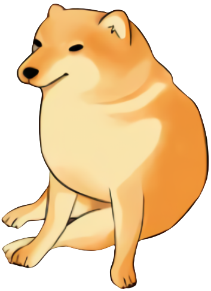
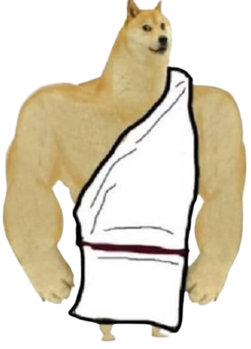
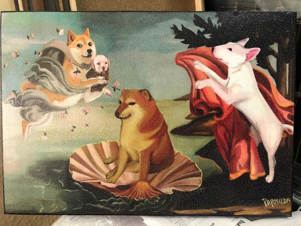
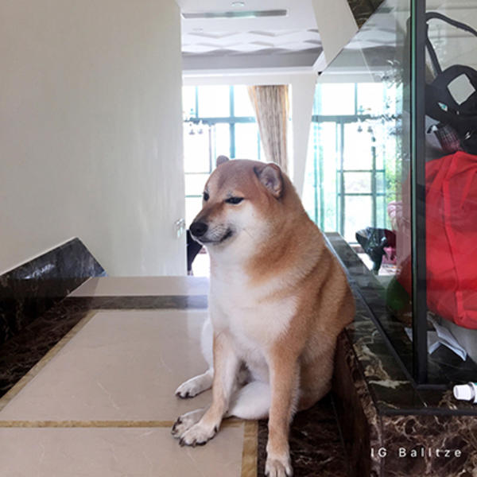

Amsiedimus

Dibujo antiguo de un Amsiedimus encontrado en una cueva.

Reinterpretacion de esta raza durante en la antigua Grecia.
Ilustacion de lo que se considera el primer Amsiedimus.

Pintura hecha en algun punto de la historia por un artista aun desconocido.

El resurgimiento de esta raza en el internet gracias a esta foto.
Reverso
Encontraste algun error?
 Ilustacion de lo que se considera el primer Amsiedimus.
Ilustacion de lo que se considera el primer Amsiedimus.